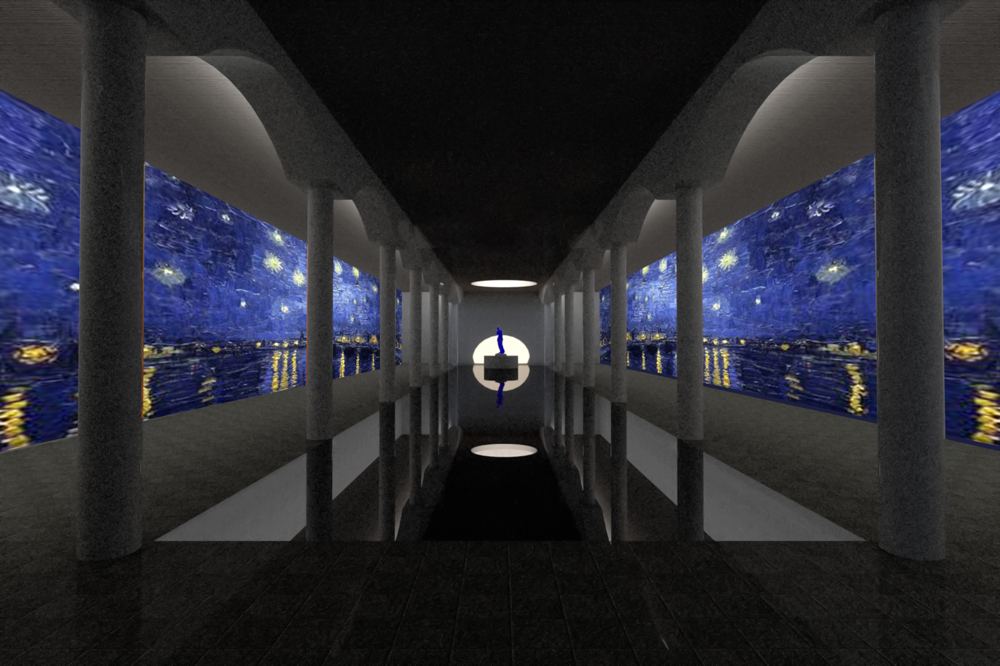
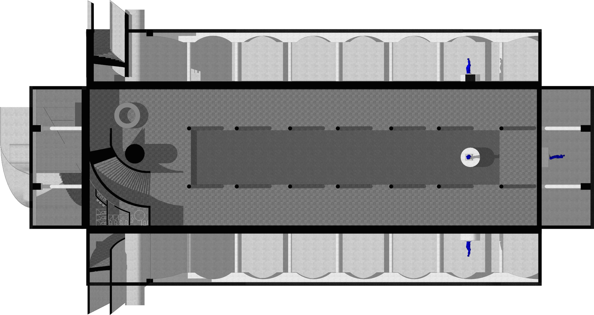
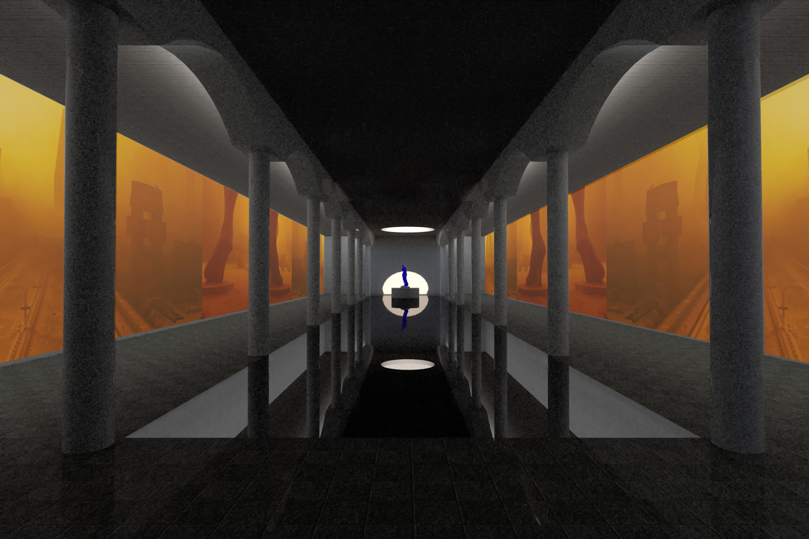

Underground art gallery beneath a proposed square, developed as part of an urban proposal for Trancoso. Free from economic constraints, the project sought to maximize the sensory and visual experience of its users, prioritizing spatial quality and artistic engagement.Underground Art Gallery proposal for Trancoso, Portugal, 2024. Part of Trancoso's call to design.

